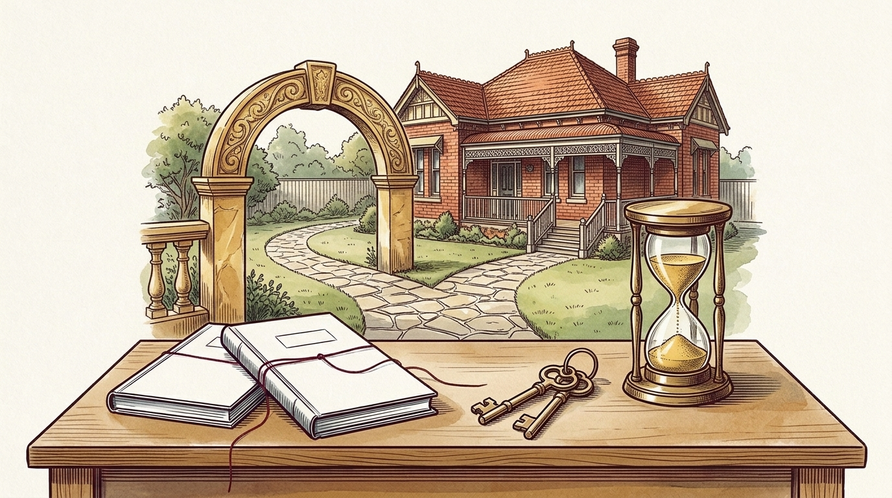

비자 거절·오버스테이 후 호주 안에서 파트너비자(820) 신청하기: Section 48 장벽과 Schedule 3 면제 법리
비자 만료 28일이 지났을 때 걸리는 Criterion 3001 장벽, 심사 시점까지 바뀐 사정을 반영하는 Waensila 판결과 Babicci '불가피한 사유' 입증 전략

학생비자나 졸업생비자·기술비자가 뜻밖에 거절되어 브리징비자(Bridging Visa)로 지내고 계신가요? 혹은 피치 못할 사정으로 비자 만료일을 넘겨 오버스테이(Overstay) 신분이 된 뒤 호주 시민권자·영주권자 배우자와 결혼을 약속하셨나요? 온라인에는 비자가 거절됐거나 불법체류 상태여도 진심으로 결혼했다면 호주 안에서 파트너비자(Subclass 820/801)를 넣을 수 있다는 글이 자주 올라와요. 반만 맞고 반은 위험한 이야기예요. 신청서 접수가 허용되는 문제(Section 48 예외)와 심사에서 승인을 받아내는 문제(Schedule 3 면제)를 구분하지 못한 채 비자 수수료만 결제했다가 거절당하는 커플이 해마다 끊이지 않거든요.
첫 번째 관문: Section 48 재신청 금지 장벽과 reg 2.12 파트너비자 예외
호주 이민법(Migration Act 1958)에는 비자가 한 번 꺾인 사람의 국내 재신청을 막는 높은 성벽이 있어요. 바로 Section 48 조항이에요. 마지막 호주 입국 이후 비자가 거절되거나 취소된 이력이 있고 현재 정식 체류 비자인 실질비자(Substantive Visa, 브리징비자 제외)가 없다면 원칙적으로 호주 안에서는 다른 비자를 접수할 수 없어요.
다행히 이민법 시행규칙(Migration Regulations 1994) reg 2.12가 좁은 쪽문을 하나 열어 두었어요. 호주 내 파트너비자(Subclass 820/801)를 Section 48 제한에서 풀리는 예외 비자군으로 정해 놓았거든요. 과거 입국 후 파트너비자를 거절당한 전력이 없고 적격 스폰서 후원과 유효 양식 요건을 갖추면 접수가 가능해요. 하지만 꼭 기억하실 점이 있어요. Section 48 예외 통과는 이민성 현관문을 넘어 심사관 책상에 서류를 올렸다는 뜻일 뿐이에요. 곧바로 훨씬 가파른 두 번째 성벽이 나타나거든요.
| 단계 및 법적 관문 | 근거 조문 · 핵심 판례 | 심사 기준 및 실무상 치명적 함정 |
|---|---|---|
| 1단계: 유효 접수 (Section 48) | 이민법 s 48 · 시행규칙 reg 2.12 | 실질비자 미소지 + 거절·취소 이력자도 호주 내 820/801 접수 허용(과거 파트너비자 거절 전력 등 결격 없을 것) · 단순 접수 허용일 뿐 승인 보장 아님 |
| 2단계: 28일 기한과 Schedule 3 | cl 820.211(2)(d)(ii) · Schedule 3 (3001·3003·3004) | 마지막 실질비자 만료 후 28일 초과 접수자는 원칙적 거절 대상 · 출국 없이 승인받으려면 Schedule 3 적용 면제(Waiver) 필수 |
| 면제 문턱의 엄격성 (Babicci) | Babicci [2005] FCAFC 77 ([21]–[24]) | 진정한 혼인·사실혼 관계 자체나 국외 309 대기 중 겪는 통상적 별거 불편만으로는 면제 불가 · 심사관을 움직일 강력한 사유 요구 |
| 판단 시점의 확장 (Waensila) | Waensila [2016] FCAFC 32 | 면제 사유가 신청일에 고정되지 않음 · 최종 결정 시점(재심 ART 포함)까지 발생한 자녀 출생·중증 질환 등 후발적 사정 모두 반영 의무 |
| 체류 중 브리징비자 제약 | Bridging Visa C (BVC) · Bridging Visa E (BVE) | 해외 출국용 BVB 발급 원천 불가(출국 시 재입국 차단) 및 기본 취업 제한 부과 · 장기 심사 기간의 생계·이동 설계 필수 |
두 번째 관문: 실질비자 만료 28일 도과와 Schedule 3(3001·3003·3004)의 벽
본안 심사로 들어서면 cl 820.211(2)(d)(ii) 조항이 앞을 가로막아요. 접수 당시 실질비자가 없는 신청자는 부칙 Schedule 3 추가 요건(Criteria 3001, 3003, 3004)을 충족해야 하거든요. 그중 Criterion 3001은 마지막 실질비자 만료일로부터 28일 이내에 접수했을 것을 요구해요.
현실을 볼까요? 이전 비자 거절 후 행정재심기구(ART) 절차를 밟으며 브리징비자로 1~2년을 보냈거나 오버스테이가 길어진 분들은 실질비자 만료 후 28일이 이미 훌쩍 지난 상태예요. Criterion 3001 통과가 산술적으로 불가능하죠. 원칙대로라면 출국해 국외 파트너비자(Subclass 309/100)를 밟아야 해요. 호주 안에서 820 승인을 받으려면 cl 820.211(2)(d)(ii) 단서에 따라 이 규정을 적용하지 말아야 할 강력하고 불가피한 사유(compelling reasons)를 입증해 면제를 받아내야 해요.
진실한 사랑만으로는 면제되지 않는 이유: Babicci 판결의 냉정한 기준
두 사람이 뜨겁게 사랑하고 결혼식도 올렸다는 사진과 편지를 수백 장 내면 면제될까요? 아쉽게도 자력 신청(DIY)의 대다수가 바로 여기서 무너져요. 연방항소법원 전원재판부의 Babicci v Minister for Immigration & Multicultural & Indigenous Affairs [2005] FCAFC 77 ([21]–[24]) 판결이 그 이유를 명확히 밝혔어요.
재판부는 compelling이란 심사관의 마음을 움직여 원칙을 면제하게 만들 만큼 강력하고 설득력 있는 사정(so powerful, forceful or convincing)을 뜻한다고 정의했어요. 왜 진실한 부부 관계만으로는 안 될까요? 진정한 혼인·사실혼 관계는 일반 신청자 모두가 갖춰야 할 기본 출발선이기 때문이에요. 남들도 다 갖추는 기본 요건을 예외 특혜 사유로 쳐줄 수는 없잖아요. 본국으로 나가 국외 309 비자를 기다리는 동안 겪을 평범한 그리움이나 이사 비용 부담만 호소해서는 Schedule 3의 벽을 넘지 못해요.
접수 이후 태어난 자녀와 후발적 사정의 힘: Waensila 전원재판부 판결
그렇다면 어떤 사정이 있어야 돌파할 수 있을까요? 접수 당시에는 사유가 약했는데 대기 중에 큰 변화가 생겼다면 어떨까요? 이 물음에 전환점을 찍은 판례가 연방항소법원 전원재판부의 Waensila v Minister for Immigration and Border Protection [2016] FCAFC 32 판결이에요. 예전 이민성은 신청일(time of application) 당시에 있던 사유만 보고 그 뒤의 변화는 잘라내곤 했어요.
연방항소법원은 전원일치로 이 좁은 해석을 뒤집었어요. 면제 판단은 신청일에 얼어붙어 있지 않다는 결론이었죠. 이민성 심사관과 재심기관(ART) 모두 최종 결정 시점(time of decision)까지 발생한 모든 사정을 종합 평가해야 한다고 판시했어요. 이 법리가 현장에서 발휘하는 위력은 대단해요. 호주 시민권자 공동 자녀의 출산과 돌봄 공백이 대표적이에요. 호주인 스폰서 배우자의 중증 질환이나 임상적으로 확인된 정신건강 악화로 상시 간병이 필요해진 사정도 마찬가지죠. 본국의 치안 위협처럼 신청인의 출국이 호주인 가족에게 돌이킬 수 없는 타격을 준다는 객관적 증거가 쌓일수록 면제 승산이 올라가요.
브리징비자 C·E의 출국·취업 제한 함정과 안전한 접수 설계
국내 접수를 감행하기 전에 현실 제약도 꼭 따져 보세요. 실질비자 없이 820을 넣으면 통상 Bridging Visa C (BVC) 또는 Bridging Visa E (BVE)가 연결돼요. 이 비자들은 해외여행용 Bridging Visa B (BVB) 발급이 원천 차단돼 있어요. 심사 중 급한 일로 출국하는 순간 비자가 소멸해 재입국 길이 막히죠. 초기 근로 제한 조건을 풀려면 재정적 곤궁(financial hardship)도 별도로 소명하셔야 해요.
잠깐 해외에 나갔다 오면 기록이 깨끗해진다는 소문을 믿고 섣불리 움직이지 마세요. 상담 확인서 한 장이면 Schedule 3가 풀린다는 말도 위험해요. 한 번 거절 기록이 남으면 다음 선택지는 훨씬 좁아져요. 거절 이력, 오버스테이 기간, 스폰서 가족의 건강·양육 사정이 얽힌 복잡한 파트너비자 사안일수록 호주 내 820 돌파와 국외 309 전략 중 어느 쪽이 유리한지 먼저 비교해 보세요. 체류 기한이 지났거나 거절 직후라면 비자 긴급 대응 센터(비자 거절·오버스테이 긴급 접수 허브)를 살펴보시고 박앤코 이민법 전용 온라인 질문지(파트너비자 및 Schedule 3 정밀 진단 접수) 또는 공식 창구(박앤코 공식 링크 허브)로 현재 체류 상태를 남겨 주세요. 두 분의 일상이 흔들리지 않도록 탄탄한 법리 설계를 도와드릴게요.
법률 안내: 이 칼럼은 호주 이민법(Migration Act 1958), 이민규정, 장관훈령 제123호와 법원 판례를 바탕으로 알기 쉽게 정리한 일반 법률 정보입니다. 개별 사건에 대한 법률 자문이나 수임 계약 성립을 뜻하지 않으므로 비자 만료일이나 재심 마감일 전에 꼭 전문변호사의 진단을 받아 보시기 바랍니다.